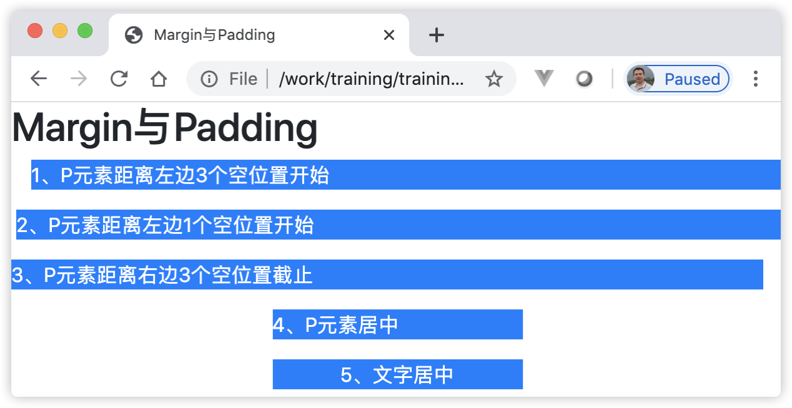

19 集成Bootstrap前端组件库¶
Bootstrap是全球最受欢迎的前端组件库，用于开发响应式布局、移动设备优先的WEB项目。
Bootstrap是一个用于 HTML、CSS 和 JavaScript 开发的开源工具包。它提供了很多功能，帮助开发者快速地开发出产品原型或构建整个App应用。Bootstrap的内容除了组件库外，还有页面布局和公共样式，这些功能针对开发者来讲，可以一站式解决WEB页面开发的实际问题。下面分别介绍下这些内容。
19.1 学习Bootstrap的公共样式¶
Bootstrap的公共样式适用与页面中的任何元素，大到页面布局，小到某一个细节元素。 Bootstrap中内置了很多公共样式，这些公共样式其实就是原子样式的合集，方便开发者直接拿来适用。公共样式里面的包含的内容有很多，如：针对元素边框的样式、文字颜色的样式、文本的样式，元素规格的样式等，本书选取其中部分内容做介绍。
19.1.1 学习文本处理的样式¶
Bootstrap的文本公共样式主要是处理文本对齐方式、文本溢出换行、字母大小写转换、字体粗细和斜体效果、重置文本颜色和文字装饰等效果的样式。下面介绍其中的几种。
19.1.1.1 文本的对齐方式¶
关于文本的对齐方式，示例代码如下：
<p class="text-justify">这个样式表示将文本重新对齐到组件：Bootstrap是一个用于 HTML、CSS 和 JavaScript 开发的开源工具包。它提供了很多功能，帮助开发者快速地开发出产品原型或构建整个App应用。 Bootstrap的内容除了组件库外，还有页面布局和公共样式，这些功能针对开发者来讲， 可以一站式解决WEB页面开发的实际问题。</p> <p class="text-left">在所有视窗尺寸上的左对齐文本。</p> <p class="text-center">在所有视窗尺寸上居中对齐文本。</p> <p class="text-right">在所有视窗尺寸上的右对齐文本。</p> <p class="text-sm-left">在SM（小尺寸）或更宽的视窗上左对齐文字。</p> <p class="text-md-left">在MD（中型）或更大尺寸的视窗上左对齐文字。</p> <p class="text-lg-left">LG（大）或更宽的视窗上的左对齐文本。</p> <p class="text-xl-left">在XL（特大号）或更大尺寸的视窗上的左对齐文本。</p>
19.1.1.2 文本溢出换行的样式¶
文本长度大于所在的组件宽度时，可以使用溢出换行的样式。示例代码如下：
<div class="badge badge-primary text-wrap" style="width: 6rem;"> 这段文本换行的效果 </div>
上述代码显示的效果如图19-1所示：

图19-1 文本换行的样式
19.1.1.3 字母大小写转换的样式¶
字母大小写转换的样式可以使英文（不支持中文）文本在大小写之间转换。示例代码如下：
<!-- 页面显示：lowercased text. --> <p class="text-lowercase">Lowercased text.</p> <!-- 页面显示：UPPERCASED TEXT. --> <p class="text-uppercase">Uppercased text.</p> <!-- 页面显示：CapiTaliZed Text. --> <p class="text-capitalize">CapiTaliZed text.</p>
text-capitalize样式的效果是使每个单词的第一个字母转为大写，而其它字母不受影响。
19.1.2 简化Margin与Padding的间距处理¶
Bootstrap中提供了一组缩写CSS的规范，对元素的 margin 或 padding 属性里的单个属性项、所有属性项以及垂直、水平等属性项进行赋值，距离单位是在采用 0.25rem 到 3rem之间的数字。具体的规则如下：
针对不同的屏幕宽度，分为两类表示法。 对于xs屏幕，使用固定格式{property}{sides}-{size} 命名CSS，对于 sm、md、lg、xl 大小的屏幕，使用 {property}{sides}-{breakpoint}-{size}格式命名CSS。
property的值是“margin”或者“padding”，二选一；规定采用简写的方式：“m”表示“margin”，“p”表示“padding”;
sides的值表示方向，如：top、bottom、left和right。同样的，规定采用简写的方式：取各个单词的首字母，如果同时表示left和right，用”横向”单词首字母“x”表示，同理，同时表示top和bottom，用”纵向”单词的首字母“y”表示；sides的值也可以不写，留空，表示4个方向；
size的值范围为数字0到5整数，还可以是“auto”值，表示按浏览器默认值自由展现；
breakpoint取值为sm、md、lg、xl和xs的一种。
下面通过代码例举说明：
<h2>Margin与Padding</h2> <p class="ml-3 text-white bg-primary">1、P元素距离左边3个空位置开始</p> <p class="ml-1 text-white bg-primary">2、P元素距离左边1个空位置开始</p> <p class="mr-3 text-white bg-primary">3、P元素距离右边3个空位置截止</p> <p class="mx-auto text-white bg-primary" style="width: 200px;">4、P元素居中</p> <div class="mx-auto text-white bg-primary" style="width: 200px;"> <p class="text-center">5、文字居中</p> </div>
运行上述代码后，显示的效果如图19-2所示：
图19-2 Margin与Padding
{kind=link}
19.1.3 掌握Flex弹性布局¶
Flex是Flexible Box的缩写，意为”弹性布局”，用来提供一个更加有效的方式实现响应式布局。任何一个容器都可以指定为Flex布局。
采用Flex布局的元素，称为Flex容器（flex container），简称”容器”。它的所有子元素自动成为容器成员，称为Flex项目（flex item），简称”项目”。容器默认存在两根轴：水平的主轴（main axis）和垂直的交叉轴（cross axis）。
我们先来了解下一个简单的Flex弹性布局，请看如下的示例代码：
<div class="container mt-3"> <h2>Flex</h2> <p>使用 d-flex 类创建一个弹性盒子容器，并设置三个弹性子元素：</p> <div class="d-flex p-3 bg-secondary text-white"> <div class="p-2 bg-info">Flex item 1</div> <div class="p-2 bg-warning">Flex item 2</div> <div class="p-2 bg-primary">Flex item 3</div> </div> </div>
上述代码中，父<div>的样式“d-flex”就是我们上面介绍的Flex容器样式，在它下面有3个子<div>标签，它们代表着容器成员，称为Flex项目。
Flex容器样式的值有两种，一种是“d-flex”，另一种是“d-inline-flex”。如果将上述代码中的Flex容器样式值换成“d-inline-flex”，这种样式，我们称为“行内 Flex”，如下面的示例代码：
<div class="container mt-3"> <h2>行内 Flex</h2> <p>使用 d-inline-flex 类创建显示在同一行上的弹性盒子容器：</p> <div class="d-inline-flex p-3 bg-secondary text-white"> <div class="p-2 bg-info">Flex item 1</div> <div class="p-2 bg-warning">Flex item 2</div> <div class="p-2 bg-primary">Flex item 3</div> </div> </div>
我们将上面的两个示例代码合在一起对比，这样从视觉上可以很容易的区别它们的差异。运行上述代码后，显示的效果如图19-3所示：

图19-3 Flex容器样式
可以根据不同的设备，设置Flex布局样式，从而实现页面响应式布局。使用 .d-{breakpoint}-flex 或者 .d-{breakpoint}-inline-flex 格式来表达其CSS样式。其中{breakpoint}代表着设备型号，分别对应sm（小型设备）、md（中型设备），lg（大型设备）和 xl（超大型设备）。
确定了设备后，接着可以在容器上设置样式，来限制容器成员的布局方式，请看如下的示例代码：
<div class="container mt-3"> <h2>水平方向</h2> <p>使用 .flex-row 类设置弹性子元素水平显示：</p> <div class="d-flex flex-row bg-secondary mb-3"> <div class="p-2 bg-info">Flex item 1</div> <div class="p-2 bg-warning">Flex item 2</div> <div class="p-2 bg-primary">Flex item 3</div> </div> <p>.flex-row-reverse 设置右对齐方向:</p> <div class="d-flex flex-row-reverse bg-secondary"> <div class="p-2 bg-info">Flex item 1</div> <div class="p-2 bg-warning">Flex item 2</div> <div class="p-2 bg-primary">Flex item 3</div> </div> </div>
上述代码中，分别使用了 .flex-row 和 .flex-row-reverse 类设置弹性子元素水平显示方式。运行上述代码后，显示的效果如图19-4所示：
{kind=link}
关于作用在容器上的样式有很多，下面对Flex布局样式的常见值进行归纳，便于读者分辨和理解它们的使用场景。如表19-1所示：
表19-1 Flex布局容器样式一览表¶ 功能
样式
说明
弹性容器
.d-{breakpoint}-flex
根据不同的屏幕设备创建弹性盒子容器
.d-{breakpoint}-inline-flex
根据不同的屏幕设备创建行内弹性盒子容器
水平方向
.flex-{breakpoint}-row
根据不同的屏幕设备在水平方向显示弹性子元素
.flex-{breakpoint}-row-reverse
根据不同的屏幕设备在水平方向显示弹性子元素，且右对齐
垂直方向
.flex-{breakpoint}-column
根据不同的屏幕设备在垂直方向显示弹性子元素
.flex-{breakpoint}-row-reverse
根据不同的屏幕设备在水平方向显示弹性子元素，且方向相反
内容排列方式
.justify-content-{breakpoint}-start
根据不同屏幕设备在开始位置显示弹性子元素 (左对齐)
.justify-content-{breakpoint}-end
根据不同屏幕设备在尾部显示弹性子元素 (右对齐)
.justify-content-{breakpoint}-center
根据不同屏幕设备在容器中显示子元素（居中）
.justify-content-{breakpoint}-between
根据不同屏幕设备在容器中显示子元素（两端对齐）
.justify-content-{breakpoint}-around
根据不同屏幕设备在容器中显示子元素（间隔相等对齐）
等宽
.flex-{breakpoint}-fill
根据不同的屏幕设备强制等宽
包裹
.flex-{breakpoint}-nowrap
不同的屏幕设备不设置包裹元素
.flex-{breakpoint}-wrap
根据不同的屏幕设备设置包裹元素
.flex-{breakpoint}-wrap-reverse
根据不同的屏幕设备设置扩展反转包裹元素
元素对齐
.align-items-{breakpoint}-start
根据不同屏幕设备，让元素在头部显示在同一行
.align-items-{breakpoint}-end
根据不同屏幕设备，让元素在尾部显示在同一行
.align-items-{breakpoint}-center
根据不同屏幕设备，让元素在中间位置显示在同一行
.align-items-{breakpoint}-baseline
根据不同屏幕设备，让元素在基线上显示在同一行
.align-items-{breakpoint}-stretch
根据不同屏幕设备，让元素延展高度并显示在同一行
表19-1例举的样式是作用在Flex容器上的，对于它的容器子元素也有对应的样式，请看如下的示例代码：
<div class="container mt-3"> <h2>外边距</h2> <p>.mr-auto 类可以设置子元素右外边距为 auto，.ml-auto 类可以设置子元素左外边距为 auto，</p> <div class="d-flex mb-3 bg-secondary"> <div class="p-2 mr-auto bg-info">Flex item 1</div> <div class="p-2 bg-warning">Flex item 2</div> <div class="p-2 bg-primary">Flex item 3</div> </div> <div class="d-flex mb-3 bg-secondary"> <div class="p-2 bg-info">Flex item 1</div> <div class="p-2 bg-warning">Flex item 2</div> <div class="p-2 ml-auto bg-primary">Flex item 3</div> </div> </div>
运行上述代码后，显示的效果如图19-5所示：
{kind=link}
Flex布局容器子元素样式也有多种，下表19-2汇总常见的子元素样式：
表19-2 Flex布局容器子元素样式一览表¶ 功能
样式
说明
扩展
.flex-{breakpoint}-grow-0
不同的屏幕设备不设置扩展
.flex-{breakpoint}-grow-1
根据不同的屏幕设备设置扩展
收缩
.flex-{breakpoint}-shrink-0
不同的屏幕设备不设置收缩
.flex-{breakpoint}-shrink-1
根据不同的屏幕设备设置收缩
排序
.order-1 到 .order-12
设置容器子元素的排序
外边距
.mr-auto
设置容器子元素右外边距为 auto
.ml-auto
设置容器子元素左外边距为 auto
对齐
.align-self-{breakpoint}-start
根据不同屏幕设备，指定子元素显示在头部
.align-self-{breakpoint}-end
根据不同屏幕设备，指定子元素显示在尾部
.align-self-{breakpoint}-center
根据不同屏幕设备，指定子元素显示在居中位置
.align-self-{breakpoint}-baseline
根据不同屏幕设备，指定子元素显示在基线位置
.align-self-{breakpoint}-stretch
根据不同屏幕设备，延展子元素显示
Flex布局贯穿着Bootstrap布局的方方面面，在Bootstrap中，无论是页面、组件还是具体的元素都使用到了Flex布局。
19.2 学习Bootstrap的布局¶
如果将Flex布局视为原始的基础，在它之上，Bootstrap专门设计了页面级的Container容器布局和响应式的用于排列组件的栅格系统布局，下面分别介绍它们。
19.2.1 Container容器¶
Container容器是页面窗口级布局的元素，使用.container或.container-fluid类来定义其样式。默认的.container类样式声明是一个响应式容器，它有固定宽度和最大宽度（max-width）的设置，并支持响应式断点，一般使用它作为整个<div>的最外层容器：
.container类样式用于声明固定宽度且居中显示的响应式容器；
.container-fluid类样式用于声明全屏宽度的容器；
.container-{breakpoint}类样式用于声明根据不同屏幕设备，显示固定的宽度比例的响应式容器。
在前面的示例代码中，我们用到了Container容器，代码示例如下：
<div class="container mt-3"> 固定宽度且居中显示的响应式容器 </div> <div class="container-fluid"> 全屏宽度的响应式容器 </div> <div class="container-md"> 支持响应式断点，显示中等屏幕固定的宽度比例的响应式容器 <div>
19.2.2 响应式栅格系统¶
Bootstrap 提供了一套响应式、移动设备优先的流式栅格系统，随着屏幕或视区（viewport）尺寸的增加，系统会自动分为最多12列。栅格系统通过一系列的行（row）与列（col）的组合来创建页面布局。通过“行”在水平方向创建一组“列”，“列”作为“行”的直接子元素，“列”可以通过“col-n”或“col-{breakpoint}-n”来设置列宽，其中n为1到12的整数。
19.2.2.1 列宽布局¶
下面来演示响应式栅格系统的列宽布局，请看如下的示例代码：
<div class="container mt-3"> <h2>等宽布局</h2> <div class="row"> <div class="col bg-info"> 1 of 2 </div> <div class="col bg-warning"> 2 of 2 </div> </div> <div class="row bg-secondary mt-3"> <div class="col bg-info"> 1 of 3 </div> <div class="col bg-warning"> 2 of 3 </div> <div class="col bg-primary"> 3 of 3 </div> </div> <h2>设置一列宽度</h2> <div class="row"> <div class="col bg-info"> 1 of 3 </div> <div class="col-6 bg-warning"> 2 of 3 (12格中占6格，其它6格另外两列平分) </div> <div class="col bg-primary"> 3 of 3 </div> </div> <div class="row mt-3"> <div class="col bg-info"> 1 of 3 </div> <div class="col-5 bg-warning"> 2 of 3 (12格中占5格,其它7格另外两列平分) </div> <div class="col bg-primary"> 3 of 3 </div> </div> <h2>可变列宽度</h2> <div class="row justify-content-md-center"> <div class="col col-sm-2 bg-info"> 1 of 3 </div> <div class="col-sm-auto bg-warning"> 可变宽度内容自由伸张，左右宽度不变 </div> <div class="col col-sm-2 bg-primary"> 3 of 3 </div> </div> <div class="row mt-3"> <div class="col bg-info"> 1 of 3 </div> <div class="col-sm-auto bg-warning"> 可变宽度内容自由伸张,左列宽度变化(右列绑定col-sm-2栅格数) </div> <div class="col col-sm-2 bg-primary"> 3 of 3 </div> </div> <h2>等宽多行</h2> <div class="row"> <div class="col bg-info">col</div> <div class="col bg-warning">col</div> <div class="w-100"></div> <div class="col bg-primary">col</div> <div class="col bg-secondary">col</div> </div> </div>
运行上述代码后，显示的效果如图19-6所示：
{kind=link}
19.2.2.2 垂直和水平对齐¶
下面来演示响应式栅格系统的垂直和水平对齐布局，请看如下的示例代码：
<div class="container mt-3"> <h2>垂直对齐</h2> <div class="row" style="height:10vh"> <div class="col align-self-start bg-info"> 上边对齐 </div> <div class="col align-self-center bg-warning"> 上下居中对齐 </div> <div class="col align-self-end bg-primary"> 下边对齐 </div> </div> <h2>水平对齐</h2> <div class="row justify-content-start"> <div class="col-4 bg-info"> 左对齐 </div> <div class="col-4 bg-warning"> 左对齐 </div> </div> <div class="row justify-content-center"> <div class="col-4 bg-info"> 居中对齐 </div> <div class="col-4 bg-warning"> 居中对齐 </div> </div> <div class="row justify-content-end"> <div class="col-4 bg-info"> 右对齐 </div> <div class="col-4 bg-warning"> 右对齐 </div> </div> <div class="row justify-content-around"> <div class="col-4 bg-info"> 间隔相等对齐 </div> <div class="col-4 bg-warning"> 间隔相等对齐 </div> </div> <div class="row justify-content-between"> <div class="col-4 bg-info"> 两端对齐 </div> <div class="col-4 bg-warning"> 两端对齐 </div> </div> </div>
运行上述代码后，显示的效果如图19-7所示：

图19-7 栅格系统的垂直和水平对齐
注意上述示例代码中，我们在垂直对齐中，对row的定义了一个高度样式，目的是拉开行的高度，让我们区别垂直上、垂直中和垂直下的布局效果。
19.3 学习Bootstrap的组件库¶
Bootstrap的组件库中包含了很多组件，种类同Angular Material中的组件类似，本章中不再对此进行详细介绍。由于Bootstrap的多数组件依赖jQuery.js，而JS是不能直接使用在Angular中的。因此，Bootstrap的组件多数是不能直接用在Angular中的，需要把它们转换为Angular方式的组件。
正是由于Bootstrap如此出名，业界目前同时存在多个Angular版本的Bootstrap组件库，如：NGX-Bootstrap、NG-Bootstrap和MDBootstrap等，它们分别是不同的团队开发和维护的，目标均是基于Bootstrap的原型，打造出Angular版本的组件库，但是在组件种类、个数、使用语法、样式和风格上存在些差异。当然了，每个团队都坚称自家才是最好的。本章选取其中的NG-Bootstrap组件库进行讲解。
NG-Bootstrap 的定位是基于 Angular开发的 Bootstrap 框架的指令集。
19.4 安装 NG-Bootstrap 组件库¶
使用用Angular CLI命令安装NG-Bootstrap，具体命令如下：
ng add @ng-bootstrap/ng-bootstrap
如果有多个Angular项目，可以通过project参数为指定项目进行安装，如：
ng add @ng-bootstrap/ng-bootstrap --project myProject # myProject为Angular项目名称
19.5 Angular中使用FontAwesome字体¶
FontAwesome是一种带有网页功能的象形文字语言，它是一套字库, 提供了675个图标，这些图标字体含有可缩放的矢量图标，可以被定制大小、颜色、阴影以及任何可以用CSS的样式。更重要的是不需要 JavaScript 支持。该字体是完全开源并且免费的，最初是为Bootstrap而设计的，现在FontAwesome适用于所有框架。
19.5.1 安装FontAwesome字体¶
FontAwesome字体专为Angular打造了一个官方的Angular组件，使用如下命令进行安装：
ng add @fortawesome/angular-fontawesome
ng add命令安装FontAwesome字体的同时，将会询问用户选择安装哪种字体：
$ ng add @fortawesome/angular-fontawesome Skipping installation: Package already installed ? Choose Font Awesome icon packages you would like to use: (Press <space> to select, <a> to toggle all, <i> to inv ert selection) ❯◉ Free Solid Icons ◯ Free Regular Icons ◯ Free Brands Icons ◯ Pro Solid Icons [ Requires: https://fontawesome.com/pro ] ◯ Pro Regular Icons [ Requires: https://fontawesome.com/pro ] ◯ Pro Light Icons [ Requires: https://fontawesome.com/pro ] ◯ Pro Duotone Icons [ Requires: https://fontawesome.com/pro ]
按照命令的提示，点击“方向键”选择字体类型，然后点击“空格键”确认，“回车”后，命令开始进行安装。安装过程中，ng add命令自动添加FontAwesomeModule模块到Angular项目的根模块中，查看src/app/app.module.ts文件，示例代码如下：
import { BrowserModule } from '@angular/platform-browser'; import { NgModule } from '@angular/core'; import { AppComponent } from './app.component'; import { FontAwesomeModule } from '@fortawesome/angular-fontawesome'; @NgModule({ imports: [ BrowserModule, FontAwesomeModule ], declarations: [AppComponent], bootstrap: [AppComponent] }) export class AppModule { }
FontAwesome字体中有3种类型的字体是免费的。这3种免费的字体所属的依赖包详情如下：
类型 |
前缀 |
所属包 |
Solid |
fas |
@fortawesome/free-solid-svg-icons |
Regular |
far |
@fortawesome/free-regular-svg-icons |
Brands |
fab |
@fortawesome/free-brands-svg-icons |
19.5.2 使用FontAwesome字体¶
首先需要导入对应字体的依赖包到组件中，如下面的示例代码：
import { Component } from '@angular/core'; import { faCoffee } from '@fortawesome/free-solid-svg-icons'; @Component({ selector: 'app-root', templateUrl: './app.component.html' }) export class AppComponent { faCoffee = faCoffee; }
然后，在组件模板中通过引用<fa-icon>组件使用FontAwesome字体，如下面的示例代码：
<fa-icon [icon]="faCoffee"></fa-icon>
<fa-icon>组件接受size（大小）、rotate（旋转）等输入型参数。请参阅如下面的示例代码：
<section class="jumbotron text-center mb-3"> <div class="container"> <h1 class="jumbotron-heading"> <fa-icon [icon]="faAngular" size="xs" style="color:red"></fa-icon> <fa-icon [icon]="faAngular" size="sm" style="color:red"></fa-icon> <fa-icon [icon]="faAngular" size="lg" style="color:red"></fa-icon> <fa-icon [icon]="faAngular" size="2x" style="color:red"></fa-icon> <fa-icon [icon]="faAngular" size="3x" style="color:red"></fa-icon><br> <fa-icon [icon]="faAngular" size="3x" style="color:red" rotate="90"></fa-icon><!-- 旋转字体 --> <fa-icon [icon]="faAngular" size="3x" style="color:red" rotate="180"></fa-icon> <fa-icon [icon]="faAngular" size="3x" style="color:red" rotate="270"></fa-icon><br> <fa-icon [icon]="faAngular" size="3x" style="color:red" flip="horizontal"></fa-icon><!-- 翻转字体 --> <fa-icon [icon]="faAngular" size="3x" style="color:red" flip="vertical"></fa-icon> <fa-icon [icon]="faAngular" size="3x" style="color:red" [spin]="true"></fa-icon><!-- 匀速转动字体 --> <fa-icon [icon]="faAngular" size="3x" style="color:red" [pulse]="true"></fa-icon><!-- 每圈分8次转动字体 --> </h1> </div> </section>
上述示例代码运行后，页面显示效果如图19-8所示：
{kind=link}
19.6 [示例 bootstrap-ex100] 使用NG-Bootstrap打造产品展示界面¶
用Angular CLI构建应用程序，具体命令如下：
ng n bootstrap-ex100 -S --routing --defaults=true
启动服务，具体命令如下：
ng serve
查看应用程序结果。打开Web浏览器并浏览到 “http://localhost:4200”，应该看到文本 “Welcome to bootstrap-ex100!”。
安装NG-Bootstrap组件库，具体命令如下：
ng add @ng-bootstrap/ng-bootstrap
添加NG-Bootstrap组件库中的Collapse组件。按照官方文档指导，编辑根组件类文件src/app/app.component.ts，增加类变量如下：
isMenuCollapsed = true;
编写Collapse组件模板。编辑组件模板文件src/app/app.component.html，并将其更改为以下内容：
<div class="container-fluid"> <nav class="navbar navbar-expand-lg navbar-dark mb-3 shadow p-3 rounded" style="background-color:orangered"> <a class="navbar-brand" [routerLink]="'.'">{{title}}</a> <!-- Step 3: Toggle the value of the property when the toggler button is clicked. --> <button class="navbar-toggler" type="button" (click)="isMenuCollapsed = !isMenuCollapsed"> ☰ </button> <!-- Step 2: Add the ngbCollapse directive to the element below. --> <div [ngbCollapse]="isMenuCollapsed" class="collapse navbar-collapse"> <ul class="navbar-nav"> <li class="nav-item active"> <!-- Step 4: Close the menu when a link is clicked. --> <a class="nav-link" [routerLink]="'.'" (click)="isMenuCollapsed = true">活动菜单</a> </li> <li class="nav-item"> <a class="nav-link" [routerLink]="'.'" (click)="isMenuCollapsed = true">菜单2</a> </li> <li class="nav-item"> <a class="nav-link" [routerLink]="'.'" (click)="isMenuCollapsed = true">菜单3</a> </li> </ul> </div> </nav> </div>
安装FontAwesome字体，具体命令如下：
ng add @fortawesome/angular-fontawesome选择安装Free Brands Icons字体。
添加Angular和Bootstrap字体。编辑根组件类文件src/app/app.component.ts，增加如下内容：
import { faAngular, faBootstrap } from '@fortawesome/free-brands-svg-icons'; faAngular = faAngular; faBootstrap = faBootstrap;
添加广告大块屏幕（Jumbotron）组件。编辑根组件类文件src/app/app.component.ts，增加如下内容：
<main role="main"> <section class="jumbotron text-center mb-3"> <div class="container"> <h1 class="jumbotron-heading"> <fa-icon [icon]="faAngular" size="2x" style="color:rgb(255, 51, 0)" class="d-inline-block align-middle mr-1"> </fa-icon>Angular 集成 Bootstrap <fa-icon [icon]="faBootstrap" size="2x" style="color:rgb(247, 0, 255)" class="d-inline-block align-middle mr-1"></fa-icon> </h1> <p class="lead text-muted">通过引用.jumbotron-heading类样式，实现构建超大的广告界面，醒目的在网站上展示关键的营销信息。</p> <p> <a href="#" class="btn btn-primary my-2">主要操作</a> <a href="#" class="btn btn-secondary my-2">次要操作</a> </p> </div> </section> </main>
添加图片来源。编辑根组件类文件src/app/app.component.ts，增加如下内容：
images = [22, 74, 64, 27, 1001, 1011].map((n) => `https://picsum.photos/id/${n}/348/225`);
使用栅格系统（Grid）和卡片（Card）组件展示商品信息。编辑根组件模板文件src/app/app.component.html，增加如下内容：
<div class="py-5 bg-light"> <div class="container"> <div class="row"> <div class="col-md-4" *ngFor='let item of images'> <div class="card mb-4 box-shadow"> <img class="card-img-top" src="{{item}}" alt="Card image cap"> <div class="card-body"> <p class="card-text">这是一个展示商品的卡片，下面有配套的文字，作为补充内容。 此例仅是演示用，卡片文字均相同，图片来自网上。</p> <div class="d-flex justify-content-between align-items-center"> <div class="btn-group"> <button type="button" class="btn btn-sm btn-outline-secondary">View</button> <button type="button" class="btn btn-sm btn-outline-secondary">Edit</button> </div> <small class="text-muted">9 mins</small> </div> </div> </div> </div> </div> </div> </div>
添加页脚（footer）组件。编辑根组件模板文件src/app/app.component.html，此文件最终完整代码如下：
<div class="container-fluid"> <nav class="navbar navbar-expand-lg navbar-dark mb-3 shadow p-3 rounded" style="background-color:orangered"> <a class="navbar-brand" [routerLink]="'.'">{{title}}</a> <!-- Step 3: Toggle the value of the property when the toggler button is clicked. --> <button class="navbar-toggler" type="button" (click)="isMenuCollapsed = !isMenuCollapsed"> ☰ </button> <!-- Step 2: Add the ngbCollapse directive to the element below. --> <div [ngbCollapse]="isMenuCollapsed" class="collapse navbar-collapse"> <ul class="navbar-nav"> <li class="nav-item active"> <!-- Step 4: Close the menu when a link is clicked. --> <a class="nav-link" [routerLink]="'.'" (click)="isMenuCollapsed = true">活动菜单</a> </li> <li class="nav-item"> <a class="nav-link" [routerLink]="'.'" (click)="isMenuCollapsed = true">菜单2</a> </li> <li class="nav-item"> <a class="nav-link" [routerLink]="'.'" (click)="isMenuCollapsed = true">菜单3</a> </li> </ul> </div> </nav> <main role="main"> <section class="jumbotron text-center mb-3"> <div class="container"> <h1 class="jumbotron-heading"> <fa-icon [icon]="faAngular" size="2x" style="color:rgb(255, 51, 0)" class="d-inline-block align-middle mr-1"> </fa-icon>Angular 集成 Bootstrap <fa-icon [icon]="faBootstrap" size="2x" style="color:rgb(247, 0, 255)" class="d-inline-block align-middle mr-1"></fa-icon> </h1> <p class="lead text-muted">通过引用.jumbotron-heading类样式，实现构建超大的广告界面，醒目的在网站上展示关键的营销信息。</p> <p> <a href="#" class="btn btn-primary my-2">主要操作</a> <a href="#" class="btn btn-secondary my-2">次要操作</a> </p> </div> </section> <div class="py-5 bg-light"> <div class="container"> <div class="row"> <div class="col-md-4" *ngFor='let item of images'> <div class="card mb-4 box-shadow"> <img class="card-img-top" src="{{item}}" alt="Card image cap"> <div class="card-body"> <p class="card-text">这是一个展示商品的卡片，下面有配套的文字，作为补充内容。 此例仅是演示用，卡片文字均相同，图片来自网上。</p> <div class="d-flex justify-content-between align-items-center"> <div class="btn-group"> <button type="button" class="btn btn-sm btn-outline-secondary">View</button> <button type="button" class="btn btn-sm btn-outline-secondary">Edit</button> </div> <small class="text-muted">9 mins</small> </div> </div> </div> </div> </div> </div> </div> </main> <footer class="text-muted"> <div class="container"> <p class="float-right"> <a href="#">回到顶部</a> </p> <p>仿照 Album example is © Bootstrap, 可以根据实际情况进一步加工、调整</p> <p>关于更多的 Bootstrap 细节知识，请参阅其官方文档 <a href=".">Visit the homepage</a> 或者直接进入 <a href=".">getting started </a>指南。</p> </div> </footer> </div>
观察应用程序页面，页面显示效果如图19-9所示：

图19-9 使用NG-Bootstrap打造产品展示界面
在上面的步骤中，完成了以下内容：
安装了NG-Bootstrap组件库，相当于可以直接在Angular项目中使用Bootstrap组件的组件了，步骤6中的Collapse组件来自NG-Bootstrap组件库，而步骤9和11中的广告大块屏幕（Jumbotron）组件、栅格系统（Grid）和卡片（Card）组件均来自Bootstrap；
步骤8中添加了Angular和Bootstrap字体，该字体属于“Free Brands Icons”字体，同时在组件模板中使用<fa-icon>组件显示它们；
卡片组件初始化时，调用组件类的images变量，该变量返回图片URL的数组；
此示例中几乎没有业务逻辑代码，纯粹是为了展示如何在Angular项目中集成NG-Bootstrap组件库和FontAwesome字体。
19.7 小结¶
本章主要介绍了如何在Angular项目中集成NG-Bootstrap组件库和FontAwesome字体。同时通过一个真实的案例来引导读者一步步的使用它的功能。通过本章的学习，读者应该基本掌握了Bootstrap组件的实战开发经验。